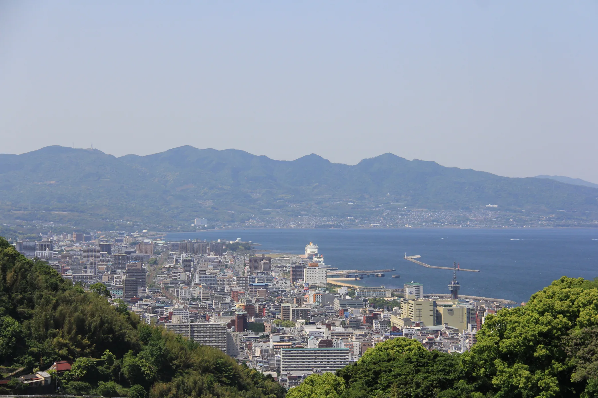
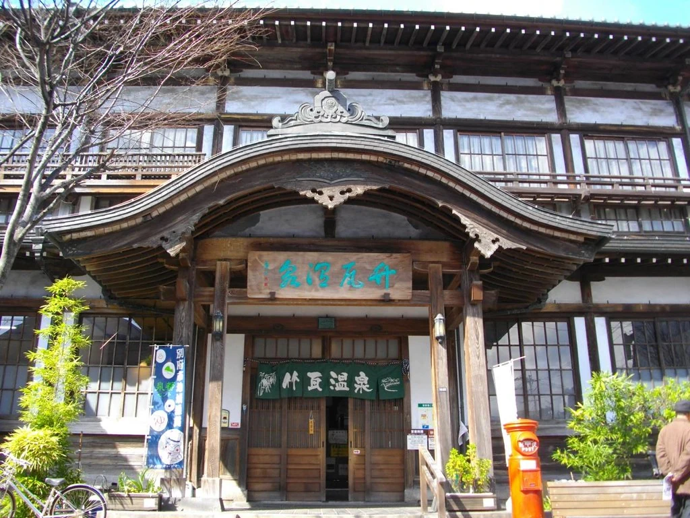
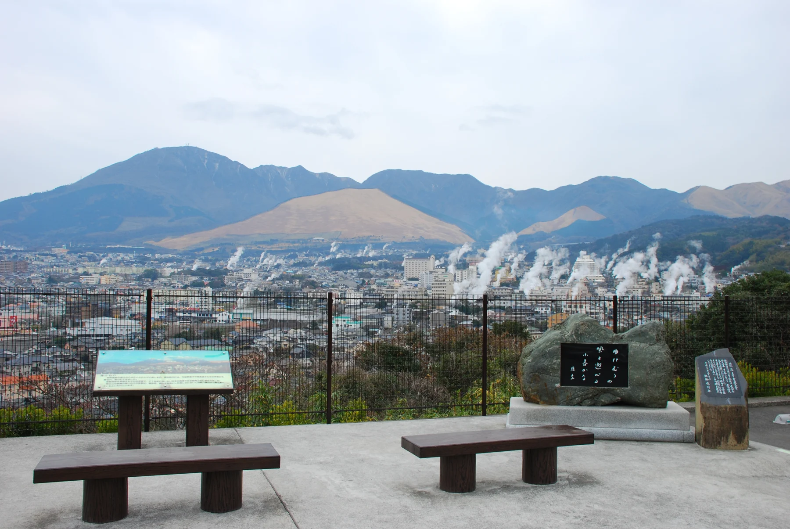
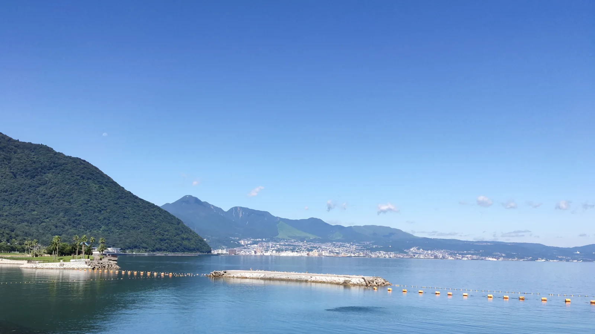

日帰りと宿泊の構成
宿泊客の構成比37.5%
- 宿泊
2,752,193人37.5% - 日帰り
4,578,107人62.5%
日帰りは総数から宿泊を引いた値。宿泊は入湯税申告に基づき、課税対象外施設を含みません。
MOBILITY ANALYSIS / 大分県・別府市 / 2026.11.04
誰が来て、どこに泊まり、どう巡るのか。
別府のデータと、国・県・市の計画を重ねて考える。
事実・推計・未確認を分けた、共創のための分析です。

VISITORS & SEASONS
2025年の別府市の観光客数は733.0万人。前年より3.6%増え、宿泊客の増加率は7.3%。ただし年間観光客数と、宿泊施設・交通機関の利用回数は別の指標です。
別府市全域2025年1〜12月市公表推計総観光客数
733.0万人
7,330,300人 / 前年比 +3.6%
宿泊客数
275.2万人
2,752,193人 / 前年比 +7.3%
日帰り客数
457.8万人
4,578,107人 / 前年比 +1.5%
日帰りは総数から宿泊を引いた値。宿泊は入湯税申告に基づき、課税対象外施設を含みません。
観光客全体は2019年を下回る一方、宿泊は上回ります。「人を増やす」だけでなく、泊まる場所と街での行動を分けて見る必要があります。これは統計からの読み取りで、追加輸送の需要量を示すものではありません。
年間合計だけでは見えない波があります。市の月別宿泊数は3月27.8万人、6月17.9万人。外国人宿泊は10月10.1万人、9月5.4万人です。
外国人は宿泊全体の内数として公表されますが、別方式の推計です。2系列を足し合わせません。
| 月 | 宿泊全体 | 外国人宿泊 | 19施設入込 |
|---|---|---|---|
| 1月 | 213,790 | 87,321 | 399,377 |
| 2月 | 223,416 | 92,575 | 350,307 |
| 3月 | 278,162 | 84,756 | 510,830 |
| 4月 | 220,205 | 94,940 | 449,837 |
| 5月 | 219,738 | 78,140 | 474,330 |
| 6月 | 178,642 | 68,022 | 285,058 |
| 7月 | 199,245 | 63,955 | 290,567 |
| 8月 | 266,822 | 58,934 | 527,865 |
| 9月 | 208,822 | 53,708 | 337,692 |
| 10月 | 242,006 | 100,712 | 387,451 |
| 11月 | 252,925 | 84,101 | 467,997 |
| 12月 | 248,420 | 95,066 | 379,648 |
| 期間 | 総観光客 | 宿泊 | 日帰り |
|---|---|---|---|
| 1〜3月 | 1,992,748 | 715,368 | 1,277,380 |
| 4〜6月 | 1,765,400 | 618,585 | 1,146,815 |
| 7〜9月 | 1,622,401 | 674,889 | 947,512 |
| 10〜12月 | 1,949,751 | 743,351 | 1,206,400 |
STAY, MARKETS & SPENDING
18.1万人増
2024年から2025年の市全体の宿泊増は18.8万人。そのうち堀田・観海寺は18.1万人増えています。北浜・中央も増加し、鉄輪・明礬とその他は減少しました。
地区別の宿泊数は、どこから街へ出る可能性があるかを考える出発点。宿から外出した割合、時刻、移動先、車の空席は未計測です。
| 地区 | 2024年 | 2025年 | 前年差 |
|---|---|---|---|
| 北浜・中央 | 1,345,037 | 1,391,050 | +46,013 |
| 鉄輪・明礬 | 436,509 | 404,562 | -31,947 |
| 堀田・観海寺 | 630,803 | 812,039 | +181,236 |
| その他 | 152,336 | 144,542 | -7,794 |
109.96万人
2025年 1,099,582人 / 改訂後2024年比 +6.3%
2025年外国人宿泊962,230人に占める構成比。上位5区分のみ。全22区分は下の表。
外国人の推計は2026年7月10日に見直されています。
2024年・2025年は遡及改訂済みです。比較に使う2024年総数は1,034,716人、宿泊918,108人。旧2024年報の451,894人・335,286人から急増したように描きません。2019〜2023年とも単純な長期比較はできません。
| 国・地域 | 総数 | 宿泊 | 日帰り |
|---|---|---|---|
| 韓国 | 432,228 | 416,032 | 16,196 |
| 台湾 | 238,690 | 232,090 | 6,600 |
| 香港 | 95,712 | 89,971 | 5,741 |
| 中国 | 133,377 | 98,655 | 34,722 |
| タイ | 22,329 | 18,224 | 4,105 |
| シンガポール | 24,728 | 22,351 | 2,377 |
| フィリピン | 10,146 | 1,266 | 8,880 |
| マレーシア | 3,659 | 2,692 | 967 |
| インドネシア | 3,927 | 551 | 3,376 |
| ベトナム | 228 | 0 | 228 |
| インド | 1,932 | 0 | 1,932 |
| アメリカ | 46,656 | 26,812 | 19,844 |
| カナダ | 3,991 | 402 | 3,589 |
| イギリス | 5,509 | 1,343 | 4,166 |
| ドイツ | 7,575 | 3,827 | 3,748 |
| フランス | 4,153 | 1,508 | 2,645 |
| ロシア | 508 | 0 | 508 |
| イタリア | 1,041 | 0 | 1,041 |
| スペイン | 662 | 66 | 596 |
| オーストラリア | 16,974 | 11,292 | 5,682 |
| ニュージーランド | 3,238 | 2,528 | 710 |
| その他 | 42,319 | 32,620 | 9,699 |

2025年・観光消費額の市推計
1,290.8億円
129,076,220千円。県単価 × 市推計客数。
改訂後2024年との比較
−7.1%
2024年は1,389.5億円。客数増でも推計額は減少。
宿泊客の消費額構成比
71.0%
宿泊客の推計消費916.4億円 ÷ 全体。
市内の実支出を直接集計した金額ではありません。
大分県の国内・外国人別／宿泊・日帰り別単価を、市の該当人数に掛けた推計です。日本人用単価は県の「観光目的・県外客」に一致します。消費単価の変化と外国人推計方法の変更を含むため、交通改善の効果とは読めません。
| 区分 | 人数（人） | 県単価（円/人回） | 市推計（千円） |
|---|---|---|---|
| 日本人宿泊 | 1,789,963 | 32,248 | 57,722,727 |
| 日本人日帰り | 4,440,755 | 8,255 | 36,658,433 |
| 外国人宿泊 | 962,230 | 35,253 | 33,921,494 |
| 外国人日帰り | 137,352 | 5,632 | 773,566 |
1.106泊
目標1.14泊に対する事業評価実績。基礎調査の対象年・標本・算式は評価表に未記載。2025年の平均泊数とは表示しません。
市2024年度事業評価・事業2 指標① ↗1泊でも、夕食後に出かける人と宿の中で過ごす人では移動が違います。市の泊数KPIは、夜の外出率・店舗滞在時間・交通待ち時間を表しません。
湯布院で確認した客室稼働率・訪日客費目・滞在時間に対応する別府資料は、末尾の全項目表で確認状況を示します。
MORE DETAIL / 宿泊と支出の補足
市の入湯税ベースの宿泊数とは別に、観光庁は回答した宿泊施設の実数を市別に公表しています。同じ施設の延べ宿泊者数と実宿泊者数から、1回の宿泊の長さを計算できます。
1.103泊
延べ1,752,591人泊 ÷ 実宿泊1,589,649人。毎月の対象70施設、回答30〜37施設。月次第2次速報12か月合算。
上の1.103泊は回答施設での比率。市事業評価の1.106泊は算式等未記載。県内旅行者の「1泊61.7%」は質問紙調査です。別府市の全宿泊者や、日帰りを含む平均滞在に置き換えません。
同じ人でも宿を替えれば施設ごとに数えます。1回の別府旅行全体の泊数ではありません。
| 発地 | 割合 % |
|---|---|
| 北海道・東北 | 1.2 |
| 関東 | 11.1 |
| 中部 | 2.9 |
| 近畿 | 6.2 |
| 中国・四国 | 6.9 |
| 福岡 | 17.4 |
| 大分 | 8.0 |
| 九州その他 | 11.3 |
| 韓国 | 15.1 |
| 外国その他 | 19.8 |
国内客だけを分母とした発地割合ではありません。全観光客の発地とも異なります。丸めの合計は99.9%。
市観光動態要覧・4頁 ↗最大は11月68.7%、最小は6月51.9%。ただし月ごとに回答施設が変わります。地域全施設の空室率や、希望する日に予約できる確率とは異なります。
| 月 | 客室稼働 % | 延べ人泊 | 実宿泊 人 | 回収施設 | 原表 |
|---|---|---|---|---|---|
| 1月 | 55.3 | 133,271 | 119,671 | 37 | Excel ↗ |
| 2月 | 63.2 | 143,002 | 128,785 | 35 | Excel ↗ |
| 3月 | 67.7 | 185,458 | 168,245 | 34 | Excel ↗ |
| 4月 | 58.6 | 142,716 | 127,615 | 35 | Excel ↗ |
| 5月 | 59.4 | 146,410 | 132,026 | 36 | Excel ↗ |
| 6月 | 51.9 | 119,477 | 108,267 | 33 | Excel ↗ |
| 7月 | 53 | 134,638 | 125,525 | 34 | Excel ↗ |
| 8月 | 66.9 | 181,562 | 166,081 | 33 | Excel ↗ |
| 9月 | 56.8 | 133,473 | 120,845 | 32 | Excel ↗ |
| 10月 | 62.9 | 144,149 | 131,817 | 34 | Excel ↗ |
| 11月 | 68.7 | 148,072 | 132,879 | 33 | Excel ↗ |
| 12月 | 62.2 | 140,363 | 127,893 | 30 | Excel ↗ |
2026年から対象区分が従業者数基準から客室数基準へ変更。以下は客室20室以上の回答施設（対象62、回収32〜36）。2025年と連続した同一系列の前年比グラフにはしません。
32,067円
観光庁公式集計。費用回答2,391件。別府市の値ではありません。団体・パック参加費の県内収入分を含み、都道府県間の交通費は含みません。
| 費目 | 全目的 n=2,391 | 観光・レジャー n=2,310 |
|---|---|---|
| 団体・パック参加費 | 4,697 | 4,753 |
| 宿泊費 | 13,155 | 12,311 |
| 飲食費 | 7,424 | 6,313 |
| 県内交通費 | 581 | 453 |
| 娯楽等サービス費 | 2,304 | 1,690 |
| 買物代 | 3,777 | 3,047 |
| その他 | 130 | 134 |
| 総額 | 32,067 | 28,699 |
公表費目の丸め合計は32,068円、総額32,067円と1円差があります。団体・パック参加費を除く民間集計とは定義が異なります。
観光庁・2025年都道府県別表1-2／2-2・大分県行 ↗以下はいずれも県内20地点の2025年度アンケート。別府市の代表値ではありません。
| 理由 | 県外・海外3,120人 % | 海外居住200人 % |
|---|---|---|
| 温泉 | 34.2 | 55.0 |
| 自然 | 28.3 | 60.5 |
| 食 | 21.1 | 40.5 |
| 再訪 | 15.3 | 8.0 |
| 名所旧跡 | 14.9 | 24.0 |
| 近い | 13.7 | 5.5 |
| 宿泊施設 | 6.5 | 10.5 |
| 親族友人の勧め | 6.1 | 12.0 |
| 初訪問 | 5.4 | 9.5 |
| メディアネットで話題 | 4.2 | 12.0 |
| 街の雰囲気 | 3.2 | 15.5 |
| 特産土産 | 2.4 | 6.5 |
| 理由なし | 3.4 | 1.0 |
| その他 | 32.1 | 6.5 |
| 不明 | 0.7 | 2.0 |
| 泊数 | 割合 % |
|---|---|
| 0泊 | 11.4 |
| 1泊 | 61.7 |
| 2泊 | 19.6 |
| 3泊以上 | 7.3 |
県外に泊まり県内は0泊の人を含みます。3泊以上は上限がないため、この階級から正確な平均泊数は計算しません。県内宿泊先設問1,964人のうち別府を挙げた人は1,026人（52.2%、複数回答）。
| 項目 | 全体4,942人 % | 海外居住200人 % |
|---|---|---|
| 交通渋滞・駐車場 | 8.5 | 10 |
| 観光地までの移動手段 | 4.6 | 16 |
| 夜間観光 | 2.2 | 9.5 |
| 特になし | 48.6 | 12.5 |
| 無回答 | 3.1 | 14.5 |
再来訪意向は全4,942人の94.1%。実際の再訪率ではありません。夜間観光の改善希望は海外居住者19人（9.5%）ですが、別府で帰りの足がない人数とは異なります。
県観光実態調査・9／25／27／33〜35頁 ↗| 区分 | 総費用 | 交通費 | 宿泊費 | 土産 | 飲食 | 入場 | その他 |
|---|---|---|---|---|---|---|---|
| 全体 | 30411 | 10880 | 40520 | 7106 | 5919 | 3325 | 3194 |
| 日帰り | 6588 | 2943 | ― | 3620 | 2955 | 2095 | 1251 |
| 宿泊 | 60874 | 15777 | 40488 | 10639 | 9211 | 4199 | 6516 |
| 県内居住 | 6043 | 2481 | 25580 | 3247 | 2757 | 1818 | 1130 |
| 県外海外居住 | 44534 | 12734 | 41106 | 8787 | 7411 | 3765 | 4718 |
費目別の分母が公表されず、各費目平均の合計は総費用と一致しません。構成比や積上げ円グラフにはせず、原表の別指標として保持しています。
県調査・30〜31頁 ↗
MOBILITY, ACCESS & BOTTLENECKS
別府への来訪手段と、県内で利用した交通、住民の日常移動は別の問いです。使える県データは県の参考値として示し、市の交通利用実績と分けます。
2025年度の現地アンケート。各季3日、計12日の土日調査。複数回答なので合計100%にはならず、円グラフにしません。海外居住は国籍ではない区分です。別府の2地点は地獄めぐり265人・ロープウェイ266人ですが、この531人の手段別集計は公表表では確認できません。
| 手段 | 全体 人 | 全体 % | 海外 人 | 海外 % |
|---|---|---|---|---|
| 自家用車・社用車・公用車 | 3797 | 76.8 | 5 | 2.5 |
| レンタカー | 420 | 8.5 | 51 | 25.5 |
| JR在来線 | 203 | 4.1 | 47 | 23.5 |
| 貸切・観光バス | 184 | 3.7 | 41 | 20.5 |
| 市内バス | 174 | 3.5 | 31 | 15.5 |
| 高速バス | 82 | 1.7 | 41 | 20.5 |
| タクシー・ハイヤー | 59 | 1.2 | 17 | 8.5 |
| バイク | 128 | 2.6 | 1 | 0.5 |
| その他 | 125 | 2.5 | 17 | 8.5 |
| 無回答 | 57 | 1.2 | 27 | 13.5 |
県PDF23頁のグラフはバイク2.5%・その他2.6%、24頁の表はバイク128人2.6%・その他125人2.5%で不一致。本表は人数と整合する24頁の表を採用しています。全体の同行人数14,984人はこの設問の分母ではありません。
2021年の市民853人調査では、日常的に最も多く利用する手段の自動車・バイクが59.1%、鉄道・バス・タクシー・乗合タクシー合計が14.4%。観光客の交通比率ではありません。
市交通計画12頁・市民アンケート ↗県調査では交通渋滞・駐車場を挙げた人が422人（8.5%）、観光地への交通機関が227人（4.6%）。海外居住者では後者が32人（16.0%）でした。
全体4,942人、海外居住200人の複数回答。実際の渋滞延長や待ち時間、別府の困難率ではありません。
県調査・改善希望34〜35頁 ↗6台
大型車の駐車収容台数。要予約、24時間以内1,000円。市全体の到着台数・入庫実績ではありません。
公式案内 ↗3時間
7地獄を巡る予定所要時間。別府駅9:20／14:00発の2設定。成人4,500円（入場料込）。市平均滞在時間ではありません。
公式案内 ↗46席
導入1台の定員。2026/10/7〜12/13、一部運休あり。別府–由布院各方向3便、約65分。実乗車人数ではありません。
公式案内 ↗別府市全体の年間観光バス到着台数・乗客数は今回の調査で公表値を確認できていません。
県の貸切・観光バス回答184人（3.7%）を市の733万人に掛けたり、定員×予定便数で来訪者数を作ることはできません。
JR別府駅・2025年度
5,925人/日
1日平均乗車。降車を含まない。通勤・通学・観光を含む。
市統計書のバス利用・2024年
565.5万人
亀の井・大分交通・九州産交の掲載集計。市内観光客だけではない。
別府港2社の下船計・2024年
20.18万人
さんふらわあ121,800人＋宇和島運輸79,993人。観光目的限定ではない。
| 駅 | 2024年度 | 2025年度 |
|---|---|---|
| 別府 | 5961 | 5925 |
| 別府大学 | 1785 | 1715 |
| 亀川 | 1317 | 1291 |
| 3駅算術合計 | 9063 | 8931 |
| 年 | 合計 | 亀の井 | 大分交通 | 九州産交 |
|---|---|---|---|---|
| 2022 | 5077695 | 2713425 | 2333070 | 31200 |
| 2023 | 6319349 | 3718271 | 2543496 | 57582 |
| 2024 | 5654799 | 3004503 | 2578466 | 71830 |
| 年 | さんふらわあ 乗/下船 | 宇和島運輸 乗/下船 | 大分空港 搭乗/降機 |
|---|---|---|---|
| 2022 | 71,787 / 64,759 | 56,534 / 53,743 | 643,707 / 649,785 |
| 2023 | 115,704 / 111,075 | 72,894 / 70,243 | 855,520 / 865,492 |
| 2024 | 126,730 / 121,800 | 81,730 / 79,993 | 932,035 / 944,944 |
| 指標 | 値 | 対象・注意 |
|---|---|---|
| 高速道路乗降車 | 135,300台 | 前年比+6.1%。流入のみ・観光のみ・ユニーク車両ではない |
| 船舶降客 / 降車 | 9,333人 / 3,589台 | 船から降りた人・車。高速道路との重複不明 |
| 観光13施設入場 | 延べ227,364人 | 同じ人の施設間重複を含む |
| 市内主要宿泊34施設 | 59,705人 | 全宿泊施設の総数ではない |
曜日配列や対象施設の違いを踏まえた速報値です。異なる指標を足して観光客総数にしません。
市2026年GW速報 ↗| 分類 | 系統数 | 運行回数 | 平均乗車密度 | 輸送量 |
|---|---|---|---|---|
| 別府地域内 | 46 | 395.5 | 12.9 | 5111.7 |
| 大分〜別府 | 3 | 22.0 | 6.1 | 134.4 |
| 別府〜湯布院 | 6 | 20.5 | 5.9 | 121.2 |
| 別府〜日出 | 2 | 3.5 | 2.1 | 7.3 |
運行回数は1日当たりの原表値。平均乗車密度は輸送人キロ÷走行キロで、1便の乗車人数ではありません。原表の「輸送量」も年間利用者数や実人数に呼び換えません。片道・往復の扱いと輸送量の算式は当該表で明確でなく、ここでは原表名を保持します。2026年の現行ダイヤではありません。
県ビジョン資料編78〜82頁 ↗2024年度・別府市営業区域
351両
期末車両数。運転者は期末290人。
年間輸送人員
137.3万人
1,372,853人 / 輸送回数880,375回。
延実働車両 / 延実在車両
44.91%
年間の実働率。今の空車率・時間帯の配車可能率ではない。
| 指標 | 一般 | 一人一車 | 合計 |
|---|---|---|---|
| 車両数（期末・両） | 321 | 30 | 351 |
| 運転者（期末・人） | 260 | 30 | 290 |
| 年間輸送回数 | 827881 | 52494 | 880375 |
| 年間輸送人員 | 1289077 | 83776 | 1372853 |
| 営業収入（千円） | 1062061 | 80147 | 1142208 |
| 実働率（%） | 42.19 | 74.26 | 44.91 |
2024/4〜2025/3、2025/7/31まで提出分。福祉輸送限定・実績のない休止事業者等は除外。営業収入は利益ではありません。
九州運輸局2024年度・印刷8頁 ↗| 年度 | 期末車両 両 | 年度輸送 千人 |
|---|---|---|
| 2018 | 327 | 1400 |
| 2019 | 302 | 1157 |
| 2020 | 302 | 445 |
| 2021 | 278 | 518 |
| 2022 | 276 | 724 |
| 2023 | 262 | 910 |
| 2024 | 270 | 1015 |
県内事業者のストックとフロー。観光以外を含み得て、県外車両の別府来訪を網羅しません。
九州運輸局・貸切バス事業概況 ↗2025年5月3日〜9月15日のドライバー聞き取りOD2,171件では、交通結節点への降車が25.0%。交通結節点への移動にも使われています。
これは国交省審議会に提出された連絡協議会の聞き取り速報です。実車総数5,187件（2025/4/28昼〜9/21・147日）とは集計期間と標本が異なります。乗客人数ではなく乗車案件。原表の平均34.0件/日は総数÷147と一致しないため採用しません。ODから追加需要・夜間外出増・消費効果を断定しません。
2025/9/29全国自治体ライドシェア連絡協議会提出資料・7/9頁 ↗県計画は2024年10月の携帯人流を掲載。別府駅・沿岸部、由布院駅とのつながりが確認できます。
大分・別府・由布の中部圏内225,126トリップ。18歳以上、地図は10トリップ以上のOD。観光客だけの集計ではなく、採用端末・拡大推計等の詳細は当該章に不足。「自動車」からバス・タクシーを分離できません。
県資料編27頁・中部圏人流 ↗国の2025年渋滞協議会は、駅前本町交差点の現地調査で目立つ渋滞がないと評価。ETC2.0の低速度には信号待ちの影響があり、解除候補としました。
2025/6/21昼の調査等。一方、クルーズ寄港日のタクシー・バス待ち列は2025/5/10・5/18の写真で確認できます。どちらも別府全体・通年の状況に一般化しません。
国交省2025/8/29渋滞協議会・17/37頁 ↗1,600円
エアライナー成人片道の普通運賃。停車地・便・所要時間は月別時刻表で確認。
最新の公式案内 ↗翌朝着
さんふらわあは通常1日1往復。曜日別時刻と検査休航等あり。大阪発日〜木19:05→翌6:55、金土20:05→7:55。
最新の公式案内 ↗6便/方向
宇和島運輸の掲載時刻。八幡浜発約2時間50分、別府発約2時間45分。運休・変更は公式確認。
最新の公式案内 ↗36番
観光快速ゆふりんは2026/10/17から当面全便運休。鉄輪からは別府駅西口経由で36番へと公式案内。
最新の公式案内 ↗1,100円
2026/7/1〜12/31使用分。ワイド1日1,800円、2日2,800円。JRや全事業者共通ではありません。
最新の公式案内 ↗2027.3まで
2027/3/31まで予定。Uber/GO、電話不可。24時間365日の枠でも配車不能な場合あり。別府市が出発または到着。
最新の公式案内 ↗2026/10/1から亀の井10番・別府駅西口浜脇線も休止。代替として南部循環線を案内しています。古い路線図や、ゆふりんを勧める券販売ページより、最新の運休告知を優先してください。10番休止の事業者告知 ↗
別府えきマチ1丁目営業所の公式案内に一時預かりと当日配送。営業所は9:00〜19:00。ホテル当日配送の締切・対象宿・料金は別条件で、宅急便の発送締切と混同しません。
提供者の条件を確認 ↗駅前観光案内所が荷物預かり、別府・由布院・大分・日出町のホテル配送を案内。対象宿・受付時間・料金は利用日の公式確認が必要です。
提供者の条件を確認 ↗大江亭・清海荘・三泉閣の宿泊客向け。ホテルフジヨシへ14時まで預け、宿で15時以降受取。帰路は宿へ10時まで、駅側11時以降。市全域の共通サービスではありません。
提供者の条件を確認 ↗大分交通の現行ページは2020/4/18から当面中止と表示。空港客貨混載の旧紹介だけで現在利用できるとは案内しません。駅の荷物配送とは別サービスです。
提供者の条件を確認 ↗荷物配送の実利用件数、宿送迎の市横断実車・費用、到着便と迎えの接続成功率は今回確認できていません。設備や提供施設数だけで、需要が満たされているとは判断しません。
POLICY / NATIONAL, PREFECTURAL & CITY
現行計画の期間を確かめ、観光の目標と交通の供給をつなぎます。全国・県全体・市のKPIは、同じ母数ではありません。計画に書かれた将来の目標と、観測された実績を分けます。
市
国
県
市
| 指標 | 目標2030年度 | 単位 |
|---|---|---|
| 地域ポータルアプリの観光客利用者数 | 1,000 | 人以上 |
ロードマップの最終年度目標。 達成実績ではなく最終年度目標。利用者の重複排除や観光客判定、基準値は当該ページ未記載。
原典 ↗| 指標 | 目標値 | 単位 |
|---|---|---|
| 訪日外国人旅行者 | 6,000 | 万人 |
| うちリピーター | 4,000 | 万人 |
| 訪日消費 | 15 | 兆円 |
| 訪日1人単価 | 25 | 万円 |
| 外国人地方延べ宿泊 | 1.3 | 億人泊 |
| 日本人地方延べ宿泊 | 3.2 | 億人泊 |
| 国内旅行消費 | 30 | 兆円 |
| 誘客と住民生活の質を両立する地域 | 100 | 地域 |
| 宿泊業付加価値 | 6.8 | 兆円 |
2030年まで。ただし宿泊業付加価値額は2030年度まで。 地方部は埼玉・千葉・東京・神奈川・愛知・京都・大阪・兵庫の8都府県以外。全国KPIは別府の需要予測でない。
原典 ↗| 指標 | 目標2027年 | 単位 |
|---|---|---|
| 観光消費額 | 2,982 | 億円 |
| 住民満足度 | 80 | % |
| 再来訪意向 | 90 | % |
| 県内宿泊客数 | 8,515 | 千人（原文表記） |
| 外国人宿泊客数 | 1,484 | 千人（原文表記） |
原表は令和9年（2027年）。計画期間の年度と区別。 県独自従業員10人以上192施設5,311,433人泊と宿泊KPIを直結しない。前期指標は観光庁宿泊旅行統計（広い母集団）と明示。消費も国調査を使う別系列で、市観光動態要覧とは異なる。
原典 ↗| 指標 | 現状2023（R5） | 目標2029（R11） | 単位 |
|---|---|---|---|
| 観光消費額 | 925 | 1,000 | 億円 |
| 宿泊者数 | 2,388 | 2,720 | 千人 |
| 外国人観光客数 | 281,564 | 622,000 | 人 |
| バリアフリーツアー相談対応 | 124 | 180 | 件 |
| WANDER COMPASS BEPPU外国人来訪 | 59,560 | 65,520 | 人 |
原表の現状値（R5）・目標値（R11）に合わせた表示。 2025市宿泊2,752,193は目標2,720,000を数値上上回る。消費の県単価移植・定義改訂を考慮。外国人KPIは旧推計基準なので改訂後2025と単純達成率不可。計画は現状分析/政策方針であり効果検証結果ではない。
原典 ↗別府市の外国人目標62.2万人は、旧推計基準です。
第3期総合戦略の2023年基準28.1564万人に対する2029（R11）の目標。推計変更後の2025年109.9582万人から達成率を計算しません。宿泊目標272万人と2025年275.2万人も、数値比較と正式な政策評価・因果効果は分けます。
国
2025〜2030年度 / 2026.1.16閣議決定
地域に合う交通、交通ネットワーク、持続可能性・安全、デジタル・新技術。全国の政策方針であり、別府の需要予測や車両導入決定ではありません。
公式計画・会議 ↗県
2026.10〜2031.9 / 2026.9策定
県全域の地域公共交通計画。旧6圏域計画は2026年9月まで。別府は大分・由布と同じ中部圏。運転手、輸送資源、乗継ぎ、空白を一体で扱います。
公式計画・会議 ↗市
2022.6〜2027.9 / 掲載PDF本文
市紹介HTMLの旧期間表記ではなくPDFを優先。2026年協議会では次期計画に向け、距離・時間帯・質のアクセシビリティをタクシー込みで可視化する方針。
公式計画・会議 ↗| 指標 | 現状値 | 2028年度末 | 2030年度末 |
|---|---|---|---|
| 交通空白地区 | 33地区（2025年度表示） | 13地区 | 0地区 |
| 路線バス平均乗車密度 | 7.4人（2024年度） | 9.0人 | 10人以上 |
| 人口1人当たり財政負担 | 1,298円（2024年度） | 1,685円以内 | 1,943円以内 |
| キャッシュレス路線バス事業者 | 5社（2025年度） | 8社 | 10社 |
| キャッシュレスタクシー | 89.3%（2025年度） | 95.7% | 100% |
| 乗合バス運転士 | 588人（2025年度・県9社） | 588人 | 588人 |
| タクシー運転手 | 1,653人（2025年度） | 1,653人 | 1,653人 |
| 人口1人当たりバス等利用 | 14.25回（2025年度） | 15.79回 | 16.82回 |
乗車密度＝年間輸送人キロ/走行キロ。財政負担は交通支援・コミュニティ交通決算/住基人口。物価上昇や維持費を見込む増額上限で、削減目標ではありません。運転手目標は増員ではなく現状維持。交通空白の市町別基準は一様ではありません。別に温室効果ガス排出量（2023年度2,168千t-CO₂→2026年度1,977→2028年度1,866）の指標があり、年度軸が異なるためこの表には含めていません。
県計画46〜49頁 ↗| 指標 | 策定時の現状 | 計画目標 |
|---|---|---|
| 一般路線バス年間輸送 | 393万人/年 | 530万人/年 |
| 1便5人以上の路線 | 46路線中43 | 全路線 |
| タクシー年間輸送 | 116万人/年 | 190万人/年（別府都市圏） |
| コミュニティ交通の行政負担 | 4,660円/人 | 3,000円/人 |
| 列車接続を確保したバス便 | 東口82.5%・西口72.9% | 維持（乗継5〜15分程度） |
| 交通結節点整備 | ― | 4箇所 |
| 地域・観光主要拠点整備 | ― | 12箇所 |
| 主要3駅乗車 | 7,075人/日 | 8,500人/日 |
| フェリー年間輸送 | 17万人/年 | 38.5万人/年 |
| 地域間幹線7路線輸送 | 65万人/年 | 95万人/年 |
| 市民の主な公共交通利用 | 14.4% | 20% |
| 利用促進協力団体・施設 | ― | 10団体 |
市統計書の一般路線2社の2024年利用は558.3万人で目標数値を上回りますが、対象年度・計画評価・定義を確認する前に、正式な達成判定や政策の効果とは書きません。3駅は別府・別府大学・亀川、タクシーは別府都市圏など範囲も異なります。
市計画75〜82頁 ↗内成棚田線・関の江団地循環線の実証は、2026/10/1〜2027/9/30へ延長承認。次期計画では徒歩距離だけでなく、時間帯や予約方法を含めて交通の不便を調べます。
2026/8/25別府市協議会議事 ↗計画との整合は必要ですが、新車導入や運行の必要性を自動的に証明しません。夜に出かけられない場面、帰宿の不成立、既存車両の余力を、時間と場所を揃えて測ることが次の検証です。
COVERAGE, LIMITATIONS & SOURCES
湯布院ページの項目を棚卸しし、別府で確認できる値、県・圏域の参考値、今回確認できなかった値を整理しました。「未確認」は存在しないという意味ではありません。異なる地域の数字で空欄を埋めず、次に必要な観測を残します。
| 分析項目 | 確認状態 | 使える範囲・不足 |
|---|---|---|
| 観光客総数・日帰り・宿泊 | 市公表値 | 2019〜2025年、2025四半期。月別は宿泊のみ。 本文へ ↓ |
| 国内・外国、外国人国/地域 | 市公表推計 | 2024/2025改訂版、2025外国人22区分。旧推計との長期比較不可。 本文へ ↓ |
| 国内の発地 | 市宿泊の地域構成 | 外国を含む全宿泊の構成。全来訪者の国内発地ではない。 本文へ ↓ |
| 訪問理由・未訪問理由・同行者 | 市単独未確認 | 県の訪問理由と改善希望は掲載。別府回答だけの集計には代用しない。 本文へ ↓ |
| 月別季節性 | 宿泊/施設入込を区別 | 2024/2025市宿泊、2025外国人宿泊、19施設入込。 本文へ ↓ |
| 地区別に泊まる場所 | 市公表値 | 北浜中央/鉄輪明礬/堀田観海寺/その他の2024/2025。 本文へ ↓ |
| 市の観光消費総額・単価 | 県単価×市人数 | 2025年4区分、改訂後2024比較。市直接支出調査ではない。 本文へ ↓ |
| 訪日客の費目別消費 | 市単独未確認・県参考 | 観光庁公式県別2025費目。別府の支出/移動費に読み換えない。 本文へ ↓ |
| 訪日客の直近4四半期支出 | 市単独未確認 | 湯布院の民間個票再集計に相当する別府市値は今回未確認。 本文へ ↓ |
| 平均泊数・宿泊日数 | 別定義を併記 | 市KPI1.106泊/2025回答施設1.103泊/県質問紙泊数。 本文へ ↓ |
| 客室稼働率・施設数 | 国の市別回答施設 | 2025従業者10人以上と2026客室20室以上を分離。 本文へ ↓ |
| 時間単位の市内滞在 | 市全体未確認 | 宿泊日数、定期観光3時間、駐車容量では代用しない。 本文へ ↓ |
| 観光客の交通手段 | 市単独未確認 | 県4,942人・海外居住200人の複数回答を別枠表示。 本文へ ↓ |
| 住民の交通手段・困りごと | 市/中部圏を区別 | 2021市民853人。2026計画中部圏1,142人は別府単独ではない。 本文へ ↓ |
| 観光バス台数・乗客数 | 市全体未確認 | 県貸切バス事業実績・調査回答・定員・駐車容量を分離。 本文へ ↓ |
| 観光/高速バス便・運賃 | 事業者の現行案内 | 定期地獄めぐり、秋限定オープントップ、フリー券、運休。 本文へ ↓ |
| 鉄道・空港・港のアクセス | 公式案内と年度実績 | JR3駅、2024港/空港、空港バス、船の公式時刻。 本文へ ↓ |
| GWの交通・観光 | 2026期間限定速報 | 8日間の高速乗降車/船舶降客降車/13施設/34宿泊施設。 本文へ ↓ |
| 駅の荷物保管・宿配送 | 提供者案内 | ヤマト/WANDER COMPASS/特定3ホテル。空港配送は中止中。 本文へ ↓ |
| 宿の送迎・最終到着便接続 | 市横断値未確認 | 対象宿の車両・時間別稼働・利用件数・費用は未確認。 本文へ ↓ |
| 地域間回遊・訪問順序 | 圏域人流/市単独未確認 | 2024年10月中部圏人流。別府翌日最初の立寄り先は未確認。 本文へ ↓ |
| 地点別乗降OD | GLOBAL標本あり | 聞き取り2,171件の起終点区分。全実車5,187件と別母数。 本文へ ↓ |
| コミュニティ交通実証 | 計画・議事・現行条件 | 延長期間/南部循環線。全サービス年間収支の一覧は未確認。 本文へ ↓ |
| タクシー車両・人員・実績 | 国の営業区域集計 | 2024年度別府市営業区域。稼働率を現在の空車率にしない。 本文へ ↓ |
| 公共交通費・委託費・収支 | 計画KPI/一部未確認 | 市行政負担KPI、県財政負担目標。全実証の確定費用一覧は未確認。 本文へ ↓ |
| 渋滞・待ち時間・駐車 | 地点/時期限定 | 駅前本町の解除候補、寄港時待ち列、大型駐車6台。通年待ち時間未確認。 本文へ ↓ |
| 夜の外出・移動断念・消費効果 | 市単独未確認 | 県夜間観光改善希望は意見。帰りの不成立人数や因果効果ではない。 本文へ ↓ |
| 国・県・市の交通計画 | 現行原典確認 | 第3次国計画、県2026ビジョン、市2027/9終期、九州広域計画。 本文へ ↓ |
| 国・県・市の観光計画 | 現行原典確認 | 国2026〜2030、県2025〜2027、市2025〜2029。市DX計画2030も併記。 本文へ ↓ |
| 湯布院側のID/分野 | 元の調査項目 | 別府側の対応と限界 |
|---|---|---|
| 01 / 訪問を見送った理由 | 混雑してゆっくりできない | 別府市単独の同等調査は未確認。県の不満・希望は、未訪問理由ではない。 関連箇所 ↓ |
| 02 / 訪問を見送った理由 | 他の観光地を訪れたい | 別府市単独の同等調査は未確認。県の不満・希望は、未訪問理由ではない。 関連箇所 ↓ |
| 03 / 訪問を見送った理由 | 宿泊・食事・移動費が高い | 別府市単独の同等調査は未確認。県の不満・希望は、未訪問理由ではない。 関連箇所 ↓ |
| 04 / 訪問を見送った理由 | アクセスが悪く移動が不便 | 別府市単独の同等調査は未確認。県の不満・希望は、未訪問理由ではない。 関連箇所 ↓ |
| 05 / 訪問を見送った理由 | 特にない | 別府市単独の同等調査は未確認。県の不満・希望は、未訪問理由ではない。 関連箇所 ↓ |
| 06 / 現地の声 | 観光アンケート・来訪者回答 | 市2021住民アンケート、県中部圏アンケート、2026協議会議事。来訪者と住民を分ける。 関連箇所 ↓ |
| 07 / 現地の声 | 観光アンケート・市民回答 | 市2021住民アンケート、県中部圏アンケート、2026協議会議事。来訪者と住民を分ける。 関連箇所 ↓ |
| 08 / 団体の調査漏れ | 回答者に占める団体 | 別府単独の団体抽出・未回答率は未確認。県の観光バス複数回答を団体比率にしない。 関連箇所 ↓ |
| 09 / 日帰り・宿泊 | 駅周辺調査・宿泊 | 市2025入込統計と外国人改訂推計あり。駅周辺の同じ400人調査ではない。 関連箇所 ↓ |
| 10 / 日帰り・宿泊 | 駅周辺調査・日帰り | 市2025入込統計と外国人改訂推計あり。駅周辺の同じ400人調査ではない。 関連箇所 ↓ |
| 11 / 誰が時間を決めるか | 韓国の旅行会社聞き取り | 別府について旅行会社が決める滞在枠・実滞在の聞取り公表値は未確認。 関連箇所 ↓ |
| 12 / 旅行の組み合わせ | 福岡都心部と由布院の2地点間でバス利用 | 中部圏携帯人流はあるが、別府と福岡の旅行者別宿泊組合せは未確認。 関連箇所 ↓ |
| 13 / 旅行の組み合わせ | 福岡都心部と由布院の両地域に宿泊 | 中部圏携帯人流はあるが、別府と福岡の旅行者別宿泊組合せは未確認。 関連箇所 ↓ |
| 14 / 旅行の組み合わせ | 福岡都心部のみに宿泊 | 中部圏携帯人流はあるが、別府と福岡の旅行者別宿泊組合せは未確認。 関連箇所 ↓ |
| 15 / 旅行の組み合わせ | 由布院のみに宿泊 | 中部圏携帯人流はあるが、別府と福岡の旅行者別宿泊組合せは未確認。 関連箇所 ↓ |
| 16 / 貸切行程 | 列車到着後の自由散策予定 | 地獄めぐり約3時間、秋別府〜由布院約65分の予定仕様。平均実滞在ではない。 関連箇所 ↓ |
| 17 / 貸切行程 | 別府経由商品での湯布院滞在予定 | 地獄めぐり約3時間、秋別府〜由布院約65分の予定仕様。平均実滞在ではない。 関連箇所 ↓ |
| 18 / 地域間回遊 | 金鱗湖・湯の坪周辺の来街者 | 2024年10月中部圏ODあり。別府観光客の同日周遊先・順序の同等表は未確認。 関連箇所 ↓ |
| 19 / 地域間回遊 | 同日に宇佐神宮も訪問 | 2024年10月中部圏ODあり。別府観光客の同日周遊先・順序の同等表は未確認。 関連箇所 ↓ |
| 20 / 地域間回遊 | 同日に深耶馬渓も訪問 | 2024年10月中部圏ODあり。別府観光客の同日周遊先・順序の同等表は未確認。 関連箇所 ↓ |
| 21 / 地域間回遊 | 同日に昭和の町も訪問 | 2024年10月中部圏ODあり。別府観光客の同日周遊先・順序の同等表は未確認。 関連箇所 ↓ |
| 22 / 既存の受け皿 | 大型専用駐車場の収容台数 | 鉄輪地獄地帯公園小倉地区・大型6台を確認。稼働率は未確認。 関連箇所 ↓ |
| 23 / ツアー実績の取り寄せ | 助成ツアーに必要な参加者数下限 | 別府で同一要件のツアー助成実績・参加者数は今回未確認。 関連箇所 ↓ |
| 24 / 消費の測り方 | 助成調査票の買物総額の階級 | 市は県単価×人数。県公式費目を別枠掲載。ツアー別買物実額は未確認。 関連箇所 ↓ |
| 25 / 訪日客の市内支出 | 訪問1人当たり | 別府市内の訪日客費目別単価は未確認。県公式単価を別府値にはしない。 関連箇所 ↓ |
| 26 / 住民への影響 | 郊外駐車場からのグリスロ利用・下限 | 市民モード/中部圏調査、寄港時列を確認。新交通による住民負担の因果測定は未確認。 関連箇所 ↓ |
| 27 / 住民の交通供給 | 地域公共交通事業の利用者数 | 市計画/実証延長/南部循環仕様あり。最新全実証の年間輸送・委託費は未確認。 関連箇所 ↓ |
| 28 / 住民の交通供給 | 地域公共交通事業の事業費 | 市計画/実証延長/南部循環仕様あり。最新全実証の年間輸送・委託費は未確認。 関連箇所 ↓ |
| 29 / 住民の交通供給 | 地域公共交通事業の運行業務委託 | 市計画/実証延長/南部循環仕様あり。最新全実証の年間輸送・委託費は未確認。 関連箇所 ↓ |
| 30 / 住民の交通供給 | 計画の対象期間 | 市計画/実証延長/南部循環仕様あり。最新全実証の年間輸送・委託費は未確認。 関連箇所 ↓ |
| 31 / 既存観光便 | ノルク所要時間 | 別府地獄めぐり・オープントップの仕様。実利用/便・収支は未確認。 関連箇所 ↓ |
| 32 / 荷物と乗継 | 一時預かりの終了時刻 | 駅の預かり・配送と特定宿サービス。地域全体の車両/対象宿数・実績は未確認。 関連箇所 ↓ |
| 33 / 支出と泊数 | 分析用の調査個票 | 国2025県訪日費目と別府市回答施設の延べ/実人数を確認。市訪日個票同等集計は未確認。 関連箇所 ↓ |
| 34 / 交通供給 | タクシー期末車両 | 2024年度別府営業区域351両、実働44.91%、輸送1,372,853人。 関連箇所 ↓ |
| 35 / 交通供給 | タクシー実働率 | 2024年度別府営業区域351両、実働44.91%、輸送1,372,853人。 関連箇所 ↓ |
| 36 / 交通供給 | タクシー輸送人員 | 2024年度別府営業区域351両、実働44.91%、輸送1,372,853人。 関連箇所 ↓ |
| 37 / 荷物と乗継 | 軽貨物車 | 駅の預かり・配送と特定宿サービス。地域全体の車両/対象宿数・実績は未確認。 関連箇所 ↓ |
| 38 / 荷物と乗継 | 配送対象宿の規模 | 駅の預かり・配送と特定宿サービス。地域全体の車両/対象宿数・実績は未確認。 関連箇所 ↓ |
| 39 / 荷物と乗継 | 配送・回収対象宿の一覧掲載数 | 駅の預かり・配送と特定宿サービス。地域全体の車両/対象宿数・実績は未確認。 関連箇所 ↓ |
| 40 / 住民の移動 | コミュニティバス利用 | 南部循環・生活路線を分離。最新スクールバス/コミュニティ年間人数の同等表は未確認。 関連箇所 ↓ |
| 41 / 住民の移動 | スクールバス利用 | 南部循環・生活路線を分離。最新スクールバス/コミュニティ年間人数の同等表は未確認。 関連箇所 ↓ |
| 42 / 宿泊と周遊 | 翌日の最初の確認先：福岡市博多区 | 別府宿泊後の翌日最初の立寄り先の同等公開表は未確認。 関連箇所 ↓ |
| 43 / 宿泊と周遊 | 翌日の最初の確認先：福岡市中央区 | 別府宿泊後の翌日最初の立寄り先の同等公開表は未確認。 関連箇所 ↓ |
| 44 / 宿泊と周遊 | 翌日の最初の確認先：別府市 | 別府宿泊後の翌日最初の立寄り先の同等公開表は未確認。 関連箇所 ↓ |
| 45 / 宿泊施設の供給 | 参考第12表で由布市の行を確認できない月 | 国の2025/2026市別参考表で回収数・稼働率・延べ/実人数を確認。 関連箇所 ↓ |
| 46 / 無料デマンド実験 | 運行日数 | 湯布院の2020無料実験に同条件で対応する別府実験は未確認。GLOBALは別制度・別標本。 関連箇所 ↓ |
| 47 / 無料デマンド実験 | 延べ乗客数 | 湯布院の2020無料実験に同条件で対応する別府実験は未確認。GLOBALは別制度・別標本。 関連箇所 ↓ |
| 48 / 無料デマンド実験 | 1日平均乗客数 | 湯布院の2020無料実験に同条件で対応する別府実験は未確認。GLOBALは別制度・別標本。 関連箇所 ↓ |
| 49 / 無料デマンド実験 | 1回の運行当たり平均乗車人数 | 湯布院の2020無料実験に同条件で対応する別府実験は未確認。GLOBALは別制度・別標本。 関連箇所 ↓ |
| 50 / 無料デマンド実験 | 由布院駅→宇奈岐日女神社 | 湯布院の2020無料実験に同条件で対応する別府実験は未確認。GLOBALは別制度・別標本。 関連箇所 ↓ |
| 51 / 無料デマンド実験 | 宇奈岐日女神社→由布院駅 | 湯布院の2020無料実験に同条件で対応する別府実験は未確認。GLOBALは別制度・別標本。 関連箇所 ↓ |
| 52 / 無料デマンド実験 | 利用者調査の回収 | 湯布院の2020無料実験に同条件で対応する別府実験は未確認。GLOBALは別制度・別標本。 関連箇所 ↓ |
| 53 / 無料デマンド実験 | 回答者のうち由布市内（湯布院町）居住 | 湯布院の2020無料実験に同条件で対応する別府実験は未確認。GLOBALは別制度・別標本。 関連箇所 ↓ |
| 54 / 無料デマンド実験 | 運行がなければ徒歩と回答 | 湯布院の2020無料実験に同条件で対応する別府実験は未確認。GLOBALは別制度・別標本。 関連箇所 ↓ |
| 55 / 無料デマンド実験 | 運行がなければタクシーと回答 | 湯布院の2020無料実験に同条件で対応する別府実験は未確認。GLOBALは別制度・別標本。 関連箇所 ↓ |
| 56 / 無料デマンド実験 | 乗車区間の適切な運賃を100円と回答 | 湯布院の2020無料実験に同条件で対応する別府実験は未確認。GLOBALは別制度・別標本。 関連箇所 ↓ |
平日・休日・寄港日別に、待ち時間、配車不成立、最終便後、荷物や介助の有無を揃えて観測。年間客数から必要台数を決めない。
既存バス・タクシー・宿送迎・荷物配送で帰宿が成立する割合と調整時間を先に確認。新車ありきにせず、情報改善や共同手配とも比べる。
街への立寄り・滞在・支出の変化を、天候・イベント・客層の近い比較対象と照合。個人の行動履歴を公開せず、匿名集計で検証する。
数字の意味を戻って確かめられるよう、元資料へのリンクを本文にも併記しています。Excel・PDFの掲載値と計算値を区別し、丸め、母集団変更、不一致を注記しています。

FROM EVIDENCE TO DIALOGUE
宿泊の増加、交通の供給、夜の外出は、それぞれ別の問いです。データだけで新しい運行を決めず、宿・店・交通事業者・住民と、実際に困る場面を照合する。共創提案は、分析と区別した別ページでご覧ください。